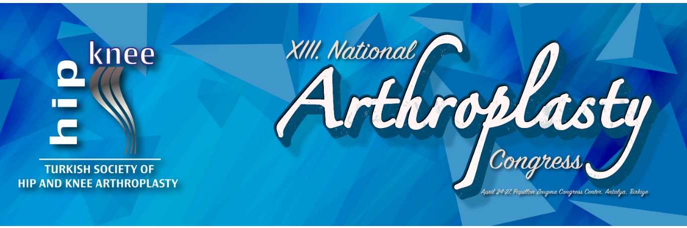

Dear Colleagues,
As the Hip and Knee Arthroplasty Association, we will hold our biennial congress on April 24–27, 2025 at the Papillon Zeugma Congress Center in Antalya.
As we share the program and announcement of the 13th National Hip–Knee Arthroplasty Congress, rich in scientific and social content, we are pleased to invite you to our congress.
Interactive sessions designed to transfer knowledge, experience, skills, and technological methods have been planned to bring together a competent academic physician cadre devoted to hip and knee arthroplasty—an area that has advanced rapidly in our country over the past 20 years and follows world standards—and our colleagues practicing in this field. While bringing the scientific meeting together with the products of technology and industry, we have also aimed for an arrangement where colleagues can mingle and exchange views throughout the congress.
With carefully selected topics, we will review hip and knee arthroplasty from all aspects; in the abstract sections placed within the same structure, we will also have the opportunity to evaluate the presentations of our young colleagues before all participants. On the technology side, through satellite symposia, workshop rooms, and on-site demonstrations, we will feel the indispensable support of industry and the impact of the latest developments.
In the ever-evolving world of medicine, it is a great honor to add another to our congresses—the most effective way to keep up with current practice and progress. Your participation in the 13th National Arthroplasty Congress will make a significant contribution to the unity and development of the Turkish Orthopedics and Traumatology community and our Arthroplasty field.
With our best regards, we announce it to all our colleagues.
Prof. Dr. Emre Toğrul
President, Hip and Knee Arthroplasty Association
